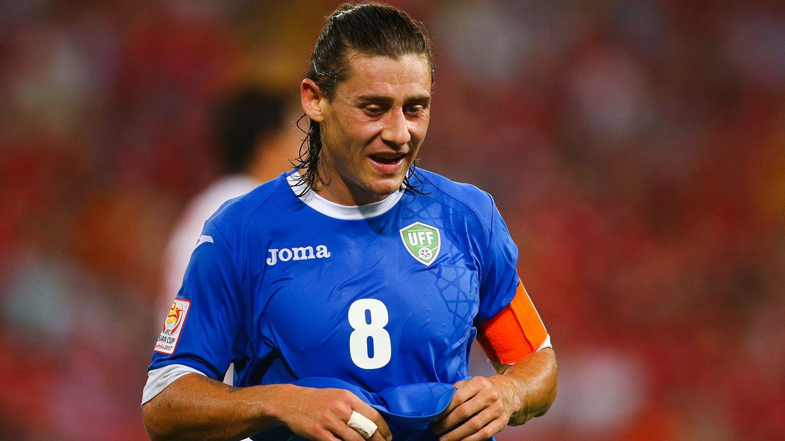
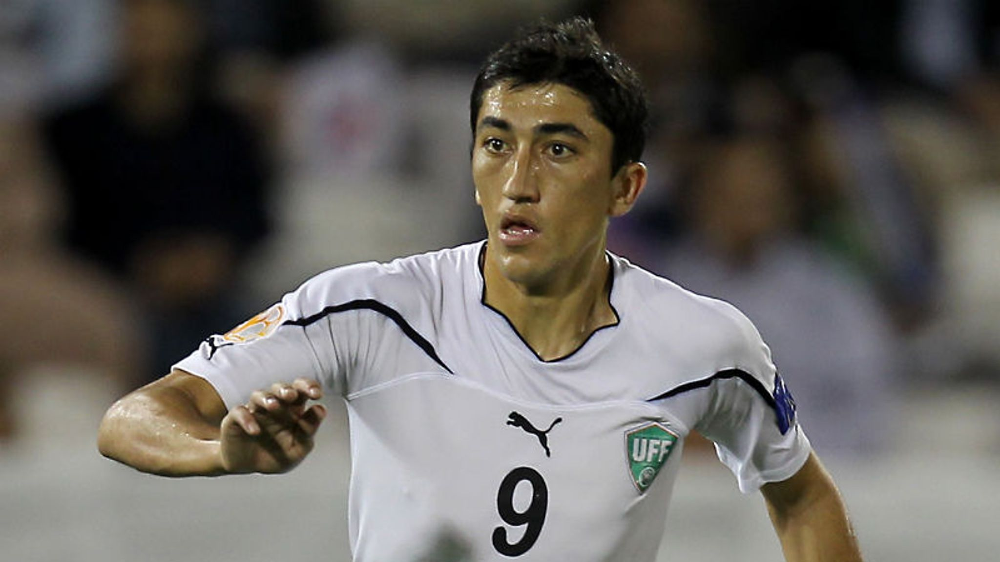

Nombre oficial: Selección Nacional de Uzbekistán
Confederación: AFC
Capitán: Eldor Shomurodov
Director Técnico: Fabio Cannavaro
Primera participación mundialista: 2026
Ranking FIFA: Entre las selecciones más fuertes de Asia Central
• Uzbekistán es una de las selecciones emergentes del fútbol asiático y ha mostrado un crecimiento constante desde su independencia en 1991.
• Tras varios intentos de clasificación, logró hacer historia al clasificar por primera vez a una Copa Mundial de la FIFA en 2026.
• El desarrollo de sus categorías juveniles y la aparición de jugadores destacados en ligas internacionales han impulsado el crecimiento del fútbol uzbeko.
| Estadística | Datos |
|---|---|
| Participaciones | 1 |
| Títulos Mundiales | 0 |
| Mejor Resultado | Fase de grupos (2026) |
| Última Participación | 2026 |
| Semifinales Alcanzadas | 0 |
| Confederación | AFC |
2026

Máximo referente del fútbol uzbeko y uno de los jugadores más destacados de su historia.

Dos veces elegido Futbolista Asiático del Año y leyenda del fútbol de Uzbekistán.

Histórico capitán de la selección y uno de los mediocampistas más importantes del país.